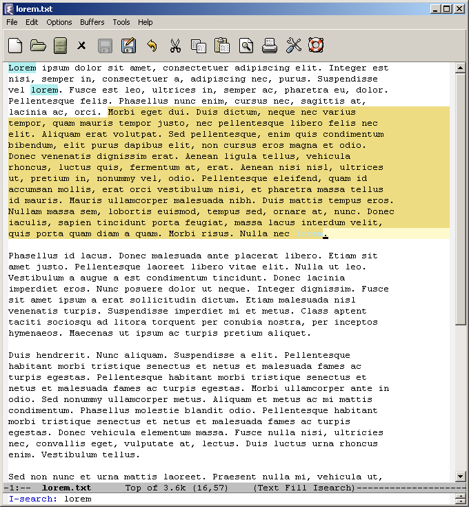
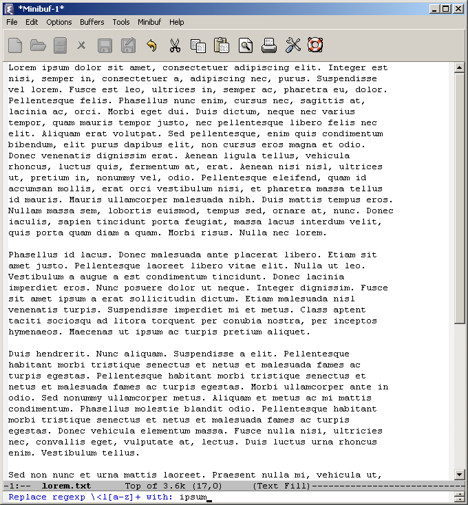
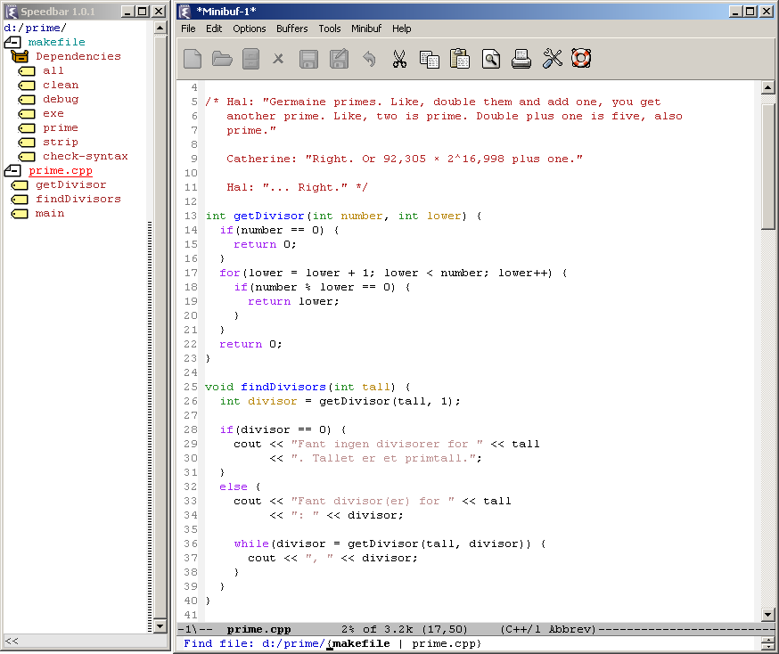
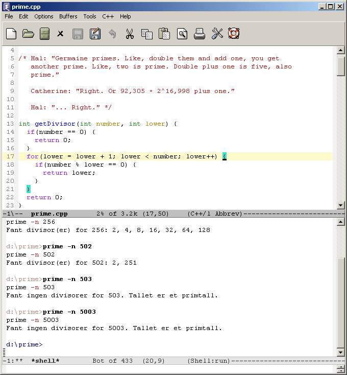

Fordeler med Emacs
… It’s not a negligible feature either. As a professional novelist and occasional desktop publisher it’s the first thing I looked for after I’d torn off the shrink wrap, and when I discovered it wasn’t there, I cursed and swore, went out for a sullen lunch and shouted at the barman.
“Something wrong, sir?” he said. “Oh, nothing,” I said gloomily. “It’s just the new version of Microsoft Word.”
Det ovenstående sitatet er fra Douglas Adams’ Guide to the Macintosh, som omhandler noe som er typisk for alle programmer vi bruker mye: avhengighet av visse former for funksjonalitet. Jo mer erfaring vi får med programmet vi bruker, jo flere snarveier og «triks» lærer vi oss for å bruke det mer effektivt. Adams’ tekst omhandler tekstbehandlingsprogrammer (slik som Word, OpenOffice Writer og AbiWord), men situasjonen er så å si den samme for rene teksteditorer (slik som TextMate, Notepad++ og Emacs). Den eneste store forskjellen er kanskje at vi som brukere av teksteditorer gjør oss avhengige av enda flere snarveier og finesser enn brukere av tekstbehandlingsprogrammer gjør.
Hva er det som gjør en funksjon nyttig og tidbesparende? Dét er det underliggende spørsmålet man bør reflektere over når man følger med fra sidelinjen på enda en «editor-krig»: «Hvordan kan du klare deg uten X?» «Hvordan får du gjort noe uten Y?» Hvis X eller Y er så nyttige som deres brukere vil ha det til, bør man kanskje begynne å bruke dem selv – enten ved å bytte til programmet de bruker, eller ved å forsøke å implementere dem i sitt eget miljø. En editor bør ikke betraktes som en religion; å følge med på hva andre gjør, ta lærdom av gode ideer og hele tiden være åpen for bedre måter å gjøre tingene på, er veien til effektiv databehandling – ikke å grave seg ned i sitt eget miljø i hellig overbevisning om at noe bedre ikke finnes.
Jeg bruker GNU Emacs, og vil i det følgende fortelle om noen av tingene som gjør Emacs til mitt favorittprogram å redigere tekstfiler i. Det jeg vil fokusere på, er de tingene som Emacs etter mitt syn gjør «helt riktig» og som jeg ikke klarer meg foruten. Imidlertid er det følgende ikke ment som et forsøk på å «konvertere» noen til Emacs. Mitt fokus er på hva slags funksjoner som kan gjøre tekstredigering mer effektivt, ikke på hvilke programmer som har disse funksjonene (selv om jeg også nevner dette for å gi folk en mulighet til å prøve ut det jeg snakker om – og der min kunnskap om andre programmer strekker til, nevner jeg flere programmer enn bare Emacs).
Det er dessuten en klar grunn til at jeg aldri kunne ha skrevet et ærlig «konverteringsinnlegg»: Min .emacs, oppstartsfilen til Emacs, har etter hvert blitt lang som et uvær. Den Emacs jeg bruker, er ikke Emacs slik den kommer «ut av boksen», men har i stedet massevis av tilpasninger for å bli hva jeg mener er en god editor. Det er i hovedsak to måter å tolke dette på:
- Siden jeg har gjennomført alle endringene som Xah Lee foreslår i sin artikkel «The Modernization of Emacs», er editoren jeg bruker å betrakte som en modernisert Emacs. (Emacs er mer enn 20 år gammel, noe som gir seg utslag bl.a. i programfilosofien – både på godt og vondt.)
- Det er egentlig ikke Emacs jeg bruker, men i stedet et ideal som jeg nærmer meg gjennom Emacs.
Den siste tolkningen er helt klart den mest interessante i denne sammenheng. Emacs er en utvidbar editor fremfor noen, og det å sette fingeren på hva som «er» Emacs i noens oppsett er ikke alltid like lett. Min egen Emacs er f.eks. sterkt inspirert av TextMate på noen områder. Følgende må understrekes: Ingen editor er perfekt, men enhver skikkelig editor lar seg modifisere.
Nok snakk – her er hva jeg savner mest når jeg prøver andre editorer:
Markering av tekst
Å markere tekst er vel den redigeringsoperasjonen som utføres oftest i en editor. De fleste editorer gjør dette på en måte som jeg synes er helt forferdelig etter å ha blitt kjent med Emacs: Man holder Shift-tasten eller venstre musetast nede, og så bruker man henholdsvis tastaturet eller musen til å bevege markøren. Hvis man slipper tasten og beveger markøren, blir markeringen borte. Markøren utgjør den ene yttergrensen til det markerte området, mens det stedet man begynte markeringen utgjør den andre. Hvis man er misfornøyd med dette stedet, må man lage en ny markering.
For meg har dette opplegget vist seg å være en ypperlig kilde til kronisk stresslidelse. Hva gjør man hvis man har behov for å markere store mengder med tekst? Den kjappeste måten er å kombinere Shift-tasten og Page Up- eller Page Down-tastene. Hvis man jobber med en så stor fil at også dette går rimelig tregt, så har man ikke noe annet valg enn å sitte der med Shift- og Page Up/Down-tasten nede og vente langt og lenge på at markeringen skal bli ferdig og banne høylydt når Shift-tasten glipper og man må begynne på nytt. Hvis man likevel får det til, og sannsynligheten for dét er med noen få unntak omvendt proporsjonal med størrelsen på markeringen, oppdager man naturligvis at man ikke har begynt markeringen der den skulle begynne, og så må alt gjøres på nytt. Jeg overdriver ikke når jeg sier at disse triste erfaringene har forbedret min evne til å sette sammen obskøniteter til lange og grufulle fraser betraktelig.
I Emacs er det intet behov for å holde hverken Shift-tasten eller venstre musetast nede. Det markerte området avgrenses av markøren på den ene siden og et usynlig merke på den andre, og det første man gjør når man lager en markering, er å trykke Ctrl + Mellomrom for å sette dette merket der markøren befinner seg. Så kan man flytte på markøren på den måten det passer en best: Man kan bevege seg fra tegn til tegn, fra ord til ord, fra setning til setning, fra avsnitt til avsnitt eller fra skjermfull til skjermfull. Eller man kan oppgi linjenummeret for å hoppe dit man vil. Eller enda bedre: Man kan søke seg frem til det stedet hvor man vil at markøren skal befinne seg (se bilde). (Min Emacs er faktisk enda smartere enn dette. Ethvert søk etablerer et passivt område mellom der markøren befant seg da jeg begynte søket og der den nå befinner seg som følge av søket. Dette området kan så gjøres aktivt, som oppnår det samme som hvis jeg selv hadde satt merket før jeg begynte søket.)

Dersom jeg er misfornøyd med merkets plassering, er ikke det noe problem: Det er bare å be Emacs om å bytte om plasseringene til merket og markøren. Slik kan jeg først flikke på den ene yttergrensen til det markerte området, og så den andre yttergrensen, helt til jeg har fått ting slik jeg vil. Også musen i Emacs drar nytte av dette opplegget: Man kan holde nede venstre musetast og «dra» musepekeren over teksten for å markere den hvis man foretrekker det, men det er mye mer behagelig å høyreklikke i teksten, noe som markerer området mellom der markøren befant seg og der den nå befinner seg som følge av klikkingen. Slik kan det markerte områdets yttergrenser bestemmes med noen få museklikk.
Klippe ut og lime inn tekst
Når man har markert en mengde tekst, er det ofte for å kopiere den eller klippe den ut. Dette er imidlertid ikke den eneste måten man kan klippe ut tekst på i Emacs. En veldig behagelig tastekombinasjon er Ctrl + K, som klipper ut («kill») alt som befinner seg mellom markøren og slutten av linjen. Ved gjentatt bruk av denne kommandoen kan man «spise opp» en rekke linjer uten å markere dem først. (Jeg har funnet igjen denne funksjonen i TextEdit, Xcode og TextMate på Mac OS X, men ikke i noen rene Windows-programmer.)
Alt man klipper ut i Emacs, havner i den såkalte kill ring, som er Emacs’ form for utklippstavle. Ved å trykke Ctrl + Y (eller Ctrl + V om man ikke liker de særegne tastekombinasjonene til Emacs og har konfigurert den deretter) limes det siste man har klippet ut inn; hvis man så trykker Alt + Y, byttes dette ut med det forrige man klippet ut, og så videre hver gang man trykker Alt + Y. Slik kan man bla seg gjennom alt man har klippet ut uten å gjøre bruk av noen meny, noe som er meget praktisk og effektivt. (Min Emacs har også en meny som jeg kan velge utklipp fra, men jeg bruker den sjelden.)
Litt skryt av TextMate: Hvis man jobber med innrykket kode i TextMate, vil innlimt tekst automatisk rykkes inn ut fra konteksten, slik at man ikke trenger å gjøre dette selv etterpå for å få ting til å se pent og oversiktlig ut. Dette er så tidbesparende at jeg har konfigurert Emacs til å gjøre det samme (og ja, at TextMate gjør dette «ut av boksen» uten noe behov for konfigurering, gir den et plusspoeng).
Automatisk innrykk
Når vi er inne på innrykk: En av de virkelig uunnværlige funksjonene til Emacs i programmeringssammenheng er dens automatiske innrykking, og da tenker jeg ikke på de «forsiktige forslagene» som andre editorer som regel kommer med. Det de fleste editorer gjør kan beskrives slik: Dersom det siste tegnet på den gjeldende linjen f.eks. er en { og man trykker Enter, vil den neste linjen rykkes inn med en tabulator, to mellomrom eller fire mellomrom ekstra, alt ettersom. Dersom det siste tegnet ikke er et slikt spesialtegn, får den neste linjen det samme innrykket som den forrige. Altså: Innrykket «deles ut» når brukeren taster Enter.
I og for seg er dette en ressursbesparende og elegant måte å håndtere innrykk på. Men den har en svakhet: Man kan ikke be linjen om å se på linjen over seg, som f.eks. slutter med en {, og rykke inn seg selv tilsvarende. Det ekstra innrykket linjen har, fikk den da brukeren tastet Enter – og hvis brukeren gjorde noe annet smart, som å bruke piltastene i stedet, så får ikke linjen riktig innrykk. Det får ikke de etterfølgende linjene heller, siden de «etteraper» hverandre og dermed ender opp med det samme, feilaktige innrykket som den første linjen. Vel, så lenge man gjør det editoren «vil» man skal gjøre, altså trykke Enter, går ting stort sett greit. Men når man begynner å kopiere og lime inn kode, kan problemer oppstå.
Dette er et problem. Det siste i hvert fall jeg vil bruke mye tid på når jeg sitter og koder, er å rette opp i innrykkene til koden. Hvis det blir nødvendig å ordne innrykket til linjen man befinner seg på, så bør det kunne gjøres med ett enkelt tastetrykk – dvs. uten å sette inn det riktige antall tabulatorer eller mellomrom selv.
Emacs har en slik tast: Tab. Denne tasten setter ikke inn en tabulator ved markøren (selv om man naturligvis kan gjøre dét hvis man har behov for det), men rykker inn linjen markøren befinner seg på med utgangspunkt i den foregående linjen. Det vil si at dersom man roter til innrykket til linjen man befinner seg på, kan man trykke Tab for å komme tilbake til «riktig» innrykk. Dette kunne ha vært katastrofalt dersom brukeren og Emacs hadde ulike meninger om hva som utgjør «riktig» innrykk, men innrykkingsrutinen i Emacs er gjennomtenkt (og konfigurerbar). Se f.eks. på følgende C++-kode:
if(foo == "bar" &&
baz == "quux") {
cout << "foo, bar, "
<< "baz, quux";
}
Her rykkes innholdet i if-setningen inn, og den smarte håndteringen av strømoperatoren (<<) gjør det uproblematisk å «cout-e» tekst som går over mer enn en linje. For øvrig har Emacs også en kommando som ordner innrykket til alle linjene i det markerte området.
Søk og erstatt
Emacs har søk og søk og erstatt med vanlig tekst, regulære uttrykk og fra og med versjon 22 regulære uttrykk med Elisp-kode. Det jeg liker aller best med alt dette er at det ikke legger hindringer i veien din.
De fleste editorer gjør som nettleseren Opera når de søker etter tekst: De åpner et dialogvindu med en «Søk»-knapp og et felt hvor søketeksten skrives inn. Dette vinduet dukker opp midt på skjermen, så det dekker over deler av teksten som man sitter og leser. Videre krever det at man først skriver inn søkestrengen og så søker etter teksten man har skrevet inn, i to operasjoner. Til slutt, når man har funnet det man søker etter, må man selv sørge for å lukke vinduet med søketeksten i. Argh!
Nettleseren Firefox, derimot, utfører søking på en mye smartere måte. For det første dukker søkefeltet opp nær bunnen av nettleservinduet, ikke i et eget vindu som dekker over deler av teksten. For det andre er søkefunksjonen i Firefox inkrementell: Man skriver «de», og Firefox viser automatisk alle forekomster av «de», med mulighet for å velge mellom dem med Enter-tasten; man skriver «t», og Firefox viser alle forekomster av «det»; man skriver «te», og Firefox viser alle forekomster av «dette». For det tredje: Hvis man vil lukke søket – og dette er strengt tatt ikke nødvendig siden det nesten ikke opptar noen plass på skjermen – er det gjort med ett enkelt tastetrykk: Escape.
Når man har brukt inkrementelt søk en stund, er det som regel uaktuelt å gå tilbake til «vanlig» søk. Som én sa det: «if it isn’t incremental, it’s excremental.»
Emacs’ søkefunksjon er inkrementell, og søketeksten skrives inn i den lille «kommandolinjen» i bunnen av vinduet som kalles minibufferen. Når jeg vil gjøre et søk, trykker jeg Ctrl + S, som flytter markøren til minibufferen. Så skriver jeg inn søketeksten, og som i Firefox vises forekomster av den mens den skrives inn. Når jeg har skrevet inn hele søkestrengen, kan jeg trykke Ctrl + S for å velge mellom forekomster av den (Ctrl + S går forover og Ctrl + R går bakover). Når jeg har kommet dit jeg vil, trykker jeg Enter eller en av piltastene for å hoppe ut av minibufferen. Enkelt og effektivt!
Også søkingen med regulære uttrykk er inkrementell; gitt at uttrykket er komplett, vil Emacs vise forekomster av det. Søk og erstatt-operasjoner kan gjøres med eller uten regulære uttrykk, og også de skrives inn i minibufferen; det er ingen forstyrrende dialogvinduer som dekker over deler av teksten i Emacs. (Det ville trolig være å gå for langt å kreve en minibuffer i andre editorer også, men iblant er jeg neimen ikke sikker.) Dersom man har markert et område med tekst før en søk og erstatt-operasjon, vil operasjonen begrense seg til dette området. Man kan erstatte alle treff på en gang, eller man kan ta dem for seg en av gangen. Man kan også telle antall treff (f.eks. er det regulære uttrykket \w+ en ordteller).
Og en ting til: Emacs har støtte for regulære uttrykk med linjeskift.

Åpning av filer
Jeg har den filosofien at operasjoner som utføres ofte, bør kunne utføres på flere måter, slik at man kan velge den måten som er mest passende etter situasjonen. Noen ganger passer det best å åpne filer med et visuelt grensesnitt, andre ganger vil man bare taste inn banen direkte. Emacs støtter begge deler.
Problemet med den visuelle måten å åpne filer på er at når den kommer til kort, så kommer den virkelig til kort også. Hva gjør man når filen er en av mange filer i samme katalog? Vel, hvis filnavnet begynner på e, så kan man trykke E på tastaturet for å hoppe til den første filen som begynner på e. Men hvis det er mange slike filer, så er det likevel nødvendig med en masse rulling før man omsider finner filen man skal ha i den overveldende listen med filnavn. Når man bare taster inn banen til filen i minibufferen, derimot, har man aldri denne lange listen med filnavn å «kjempe» med – man bare taster inn filnavnet, og det er det.
Men hva hvis man ikke husker filens nøyaktige plassering eller filnavn? Emacs’ filåpningsrutine har autofullfør, bundet til Tab. Dermed kan man skrive inn den første delen av filnavnet (eller plasseringen) og trykke Tab en eller flere ganger for å bla gjennom forslag til fil- eller mappenavn. Dette gjør inntasting av baner enkelt og effektivt.

Min egen Emacs bruker en enda smartere fullføringsrutine, vist på bildet over. Den minner litt om de nye billettautomatene til NSB, som viser en liste over forslag til togstasjoner og snevrer inn listen når man taster inn mer av stasjonsnavnet. I min Emacs vises en slik liste ved siden av filnavnet, og jeg kan snevre inn listen ved å taste inn en hvilken som helst del av filnavnet. (Jeg kan også bytte mellom filer jeg allerede har åpnet på dette viset.) Dette gir meg så å si det beste av begge verdener: rask åpning av filer og et overblikk over katalogen de befinner seg i uten å måtte rulle en lang liste med filnavn. (TextMate har for øvrig noe av det samme.)
Når man jobber med mange filer, kan det også være kjekt med en oversikt over katalogen man befinner seg i eller filene man har åpnet til høyre eller venstre for selve redigeringsvinduet. I Emacs får man dette med Speedbar (vist til venstre på bildet).
Vindushåndtering
Emacs’ måte å håndtere vinduer på er like effektiv som den er gammel og ved første øyekast stygg: Én ting som nok holder mange fra å umiddelbart omfavne Emacs, er at vinduene rett og slett ser ut som noe fra en terminalmaskin fra 20 år siden. I stedet for å opprette mindre vinduer som «flyter» rundt inni hovedvinduet, «splitter» Emacs arbeidsområdet opp i mindre deler ved bruk av rullefelt og statuslinjer. Vinduenes størrelse bestemmes ved å flytte på disse.
Emacs’ vindushåndtering er like fullt noe av det jeg liker best med Emacs. Hvordan har det seg? Det hele koker ned til et konseptuelt skille: Der andre editorer behandler vinduet og vinduets innhold som én udelelig enhet, skiller Emacs mellom vinduet og innholdet i vinduet. Innholdet i et vindu kalles i Emacs-terminologi for en buffer. Når man befinner seg i et hvilket som helst vindu, kan man be vinduet om å bytte buffer – omtrent slik man kan bytte siden som vises i en nettleser (eller mer presist: i en av nettleserens faner).
Dette betyr at man først kan sette opp de vinduene man har bruk for (f.eks. to vinduer under hverandre), og deretter velge hva man vil bruke disse vinduene til å vise. Å bytte buffere går dessuten så raskt at man godt kan bruke ett og samme vindu til å veksle mellom to buffere. Alt dette gjøres naturligvis med tastaturet. Selv om de fleste editorer har kommandoer for automatisk oppstilling av vinduer, har jeg til gode å se noe som er like effektivt som Emacs’ vindushåndtering.

På bildet over opererer jeg med to vinduer: et for programmering og et for kommandolinjen. Det siste er ekstremt praktisk dersom man bruker kommandolinjen mye. Dette illustrerer for øvrig den berømte allsidigheten til Emacs: Det aller meste, fra filbehandling til å lese e-post og surfe på nettet, kan gjøres i Emacs. Onde tunger refererer til denne allsidigheten med de like berømte ordene «Emacs is a great OS, the only thing it lacks is a decent editor».
Når det kommer til stykket, er det tekstredigering alt dette dreier seg om. Jeg har i det ovenstående tatt for meg de funksjonene som er mer eller mindre unike for Emacs, men de funksjonene som alle skikkelige editorer har i en eller annen form, fortjener også å nevnes: linjenummere, fargekoding, innsetting og fremheving av parentespar, autofullfør, forkortelser, kode-folding, tastaturmakroer, rektangulær redigering («column mode»), TAGS-navigering o.a. (Se for øvrig Wikipedias «Comparison of text editors»-artikkel.) Uansett hvilken editor man blir kjent med disse funksjonene i, vil de alle fleste være enige i at de er uvurderlige når det har blitt en vane å bruke dem.
Derfor er i hvert fall min skuffelse stor når jeg prøver et program spesifikt beregnet på programmering, et såkalt IDE (Integrated Development Environment), og finner at det mangler en eller flere av disse funksjonene. Den konklusjonen jeg har trukket etter å undersøkt mer enn ett av de største IDE-ene, er at mens de alltid gir en veldig god oversikt over koden man jobber med, er ikke vinduet hvor koden skrives inn i nærheten av å oppfylle de kravene jeg som editor-entusiast stiller. I forundring tenker jeg: Er det virkelig meningen at man skal kode i det der? Og min endelige dom over programmet blir en parafrasering av det berømte Emacs-utsagnet: «IDE X is a great IDE, the only thing it lacks is a decent editor.»
Derfor er Emacs’ allsidighet kanskje ikke en så dum ting allikevel, siden den gjør det mulig å bruke Emacs som IDE.
He narrowed his eyes apprehensively. “My God,” he breathed, “don’t say they left out the word count again … oh, the senselessness of it all!”
Og Word? La oss prise oss lykkelige over at det er editorer og ikke tekstbehandlingsprogrammer vi håndterer her. I 2007 er Word i sin åttende årstallsutgave og har fortsatt ingen intelligent støtte for ordentlige anførselstegn, noe det gratis alternativet OpenOffice Writer har hatt i årevis. Uansett hvilket program man velger, bør man se til at det har et aktivt utviklingsmiljø som bidrar med ny og forbedret funksjonalitet, ikke bare den type kosmetiske endringer som praktisk talt er det eneste som driver mesteparten av Microsofts programvare fremover. På den måten er man sikret at ny funksjonalitet legges til fordi noen har bruk for den, fremfor enda et forsøk på å skvise mer penger ut av «same shit, different wrapping». Man vil også befinne seg i en helt annen situasjon dersom man føler for å bidra med ny funksjonalitet selv.
Hvis programmet ikke har et aktivt utviklingsmiljø, er man prisgitt opphavsmennenes luner og innfall, og å spekulere i deres intensjoner er aldri særlig givende:
“Why is there pain and misery in the world?” I said. “Why is the sky blue? Why is water wet? Why didn’t Microsoft even put in a word count? These things are unknowable.”
“You, sir, are a philosopher,” said the barman. “You have to be in this business,” I said and left.